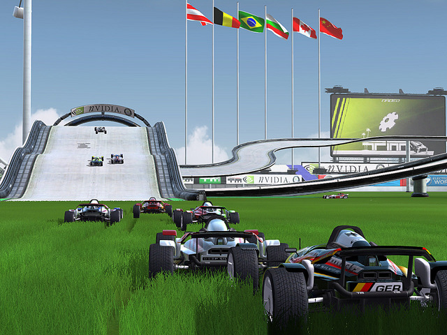
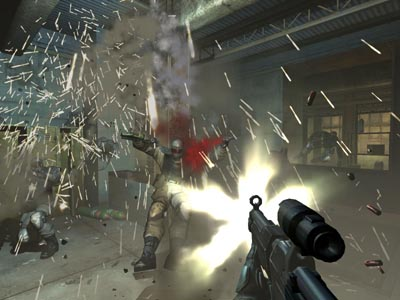
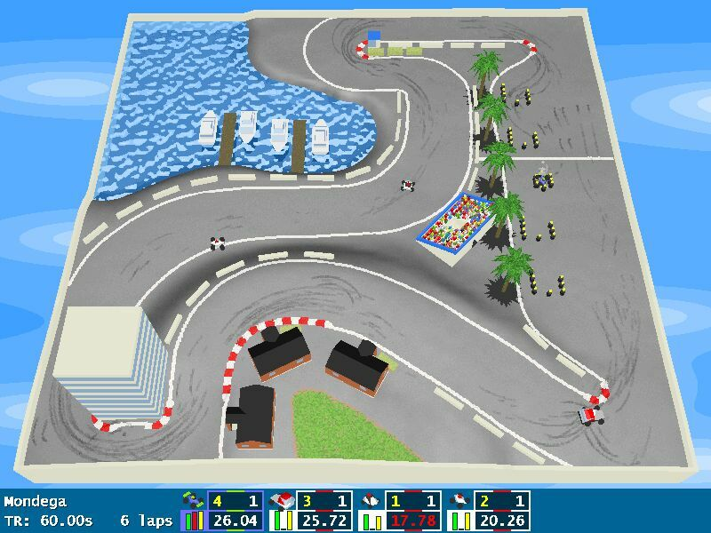
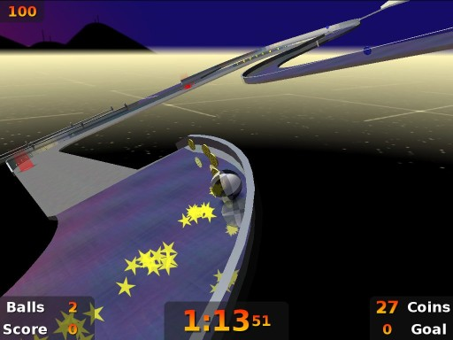
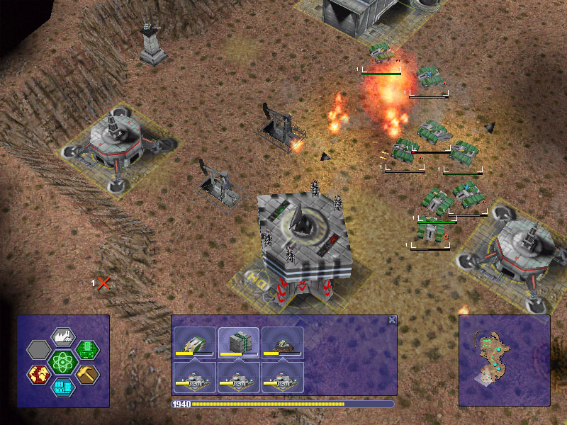
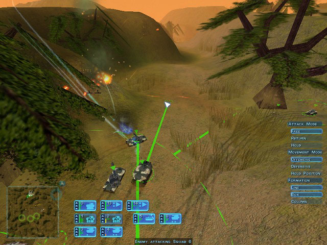
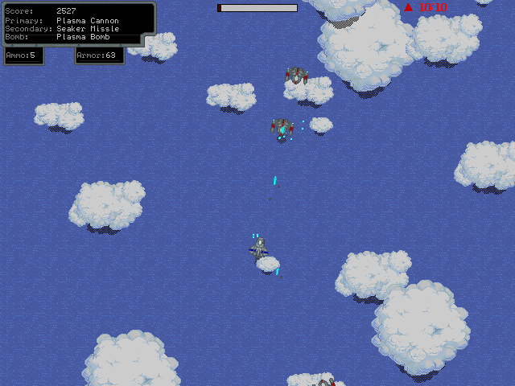
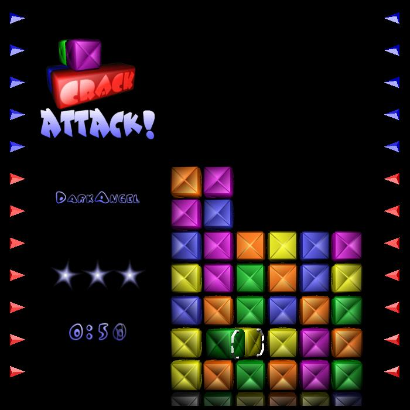

Originally by a friend of Crushproof's:
Kickass awsome games that you should talke a look at, the best are (in graphcs and gameplay) Track mania Nations, Penumbra (has really good 3d and physics)
Tribes.............JUST TRY THEM ALL FOR YOUR SELF
 Cave Story
Cave Story
Cave Story is an amazing old-school side-scrolling adventure that is reminiscent of games like Castlevania or Metroid. Created by some Japanese guy who calls himself Pixel over the course of four years, his hard work and creativity has come together to create a game of utmost quality. I'm not just speaking for myself here, this game has quite a cult following. As far as I know, this is the only freeware game that has spawned it's own high-quality music remix project.
If you're into old-school games at all, you should download this game. If you're not, you should download it anyway.
The game doesn't really have an official site so the only places it can be downloaded are third-party sites. I recommend the following because it already has the english patch installed. Oh, and having a gamepad wouldn't hurt, but I've beaten the game on a keyboard so it's not impossible.
http://www.caiman.us/scripts/fw/pageN.php?...f=CaveStory.zip
Frets on Fire
If you own Guitar Hero, you can probably pass on this one. Frets on Fire is an very unique and entertaining Guitar Hero clone for PC. To play, you actually hold the keyboard like the guy in the image above. Or if you have a Guitar Hero guitar and a PS2/USB adapter you can hook it up to play. While the game only comes with 3 songs, there's plenty of custom songs that you can download. Sadly, the quality of play you'll get out of each custom song varies heavily. You can also take one of your favorite songs and put in your own frets if you'd like.
But yeah, if you're looking for something fresh as far as PC games go, you should definitely give this game a download!
http://louhi.kempele.fi/~skyostil/uv/fretsonfire/
Trackmania Nations

Racing doesn't really get too much more off the wall than Trackmania Nations. Trackmania Nations is really just about anything but your standard racing game. Break-neck speeds, huge jumps, loops, wall-riding... Yeah, I think you get the point, it's crazy! One of the odd things, however, is that in online play you don't collide with other cars. I know why they did this, but it would be nice to at least have it as an option.
Racing game fan or not, this game is likely to please. Also, it comes with a track editor so that sends the replayablity through the roof!
http://www.trackmanianations.com/indexUk.php
Within a Deep Forest
Within a Deep Forest is a Metroid style game with a unique twist... You play as a ball that can only bounce. No attack, not nothin'. Just bouncing. Surprisingly, it's actually really good! You use your amazing bouncing powers to explore the world and collect different ball materials to get into more areas and so on and so forth. Also, the game has some really neat music that will immerse you into the game. It's all electronic but it gives the game a really nice atmosphere.
If you're looking for a challenge, you've found the right game.
http://withinadeepforest.ni2.se/
Star Control II
While Star Control II is not the actual name of the freeware game, but the actual name makes me lose smartness.
So anyway, Star Control II is a mixed-genre space adventure (originally released retail in 1994) that many (including myself) say is one of the greatest games of all time. You're the captian of a potentially powerful spaceship and it's up to you to free Earth and the universe from the grasps of an evil alien race. To do so you will need to do many things, including: Talk with many interesting alien races to get them to join your ranks, slaughter those who refuse, collect minerals to build more ships or upgrade your flagship, and rely on information you get from aliens to complete tasks and solve puzzles.
All and all, Star Control II is an excellent, lengthy game that has a great story and over 20 different ships to fly in combat, each extremely different from the last.
http://sc2.sourceforge.net/
Toribash

Toribash is undoubtably the most unique fighting game in existance. It's a turn-based ragdoll fighting game that makes Super Smash Brothers seem like Street Fighter II. While at first the gameplay may seem overwhelming, you will quickly learn what each of the different joints do and how to use them. There's both singeplayer and online play, both play fairly differently. In singleplayer, your opponent has no AI and your goal is do as much damage as possible to it. Obviously, in multiplayer you will be fighting a live human who will make his moves at the same time as you.
Toribash is a pretty damn fun game. It lacks somewhat in variation, but expect that to change as soon as there is some better mod support.
http://www.toribash.com/
Soldat
I had a game just in Soldat in my head for many years and when I finally discovered that such a game existed, it was hard to hold in my excitement. Soldat is an online deathmatch game that's like a mix of Unreal Tournament, Counter-Strike, and Contra. You would think you would be fairly limited in movement in a 2D game, and you would be right were it not for jetpacks. Shootin' bitches up AND flying?! Does it get any better? Yes! Shootin' bitches while flying around with the enemy flag! There's enough variation in modes to keep you playing Soldat for a while.
The site looks kind of shoddy, but you can rest assured that the game itself is quality!
http://www.soldat.pl/main.php
F.E.A.R. Combat

What's that? You never got around to buying F.E.A.R.? Well, isn't today your lucky day?! Not all that long ago, the multiplayer portion of F.E.A.R. was released for free! While F.E.A.R. multiplayer has never been the best multiplayer around, it's far from the worst. Fatal clost combat moves, intense gunfights, on the fly grenades, a fair assortment of maps and weapons, and mind-blowing graphics make the game one of the best free online shooters available. If you already own F.E.A.R. already, however, there's nothing new to see here.
http://www.joinfear.com/main
GeneRally

Does anyone remember classics like Super Sprint, Micro Machines, or RC Pro-AM? ... No? Uhh, well okay. In GeneRally you control a little car from a bird's eye view and, obviously, your goal is to get the best time or beat the other little cars. The game is more challenging than other games of the sort because your car actually takes damage when it crashes. When you ram yourself right into a tree, you better hope your not too far from the pit stop because that's the only place that's going to fix you up. There's plenty of different vehicles to choose from and it even comes with a track editor so you can make the race track of your dreams!
If you have fond memories of the games above, this is at least bound to keep you entertained for an after-noon or so. If not, it might.
http://generally.rscsites.org/
Neverball

If you've played Super Monkey Ball or Marble Madness, you know what you're getting into. If you haven't, you don't know what you're getting into. Basically, you try to get your ball to the goal by tilting the playfield. Sounds easy, right? Well, it really isn't, I'm afraid to say. There's plenty of things out there that can cause your innocent little ball to fall of a ledge. Games like this can get really challenging, but for some reason you won't stop playing!
I can really only see someone getting a whole lot of satisfaction out of this game if they have a joystick. Controlling with the mouse seems a little bit troublesome, but I only tried using it for about a couple of seconds so I don't know. I'd also like to let you know that the production value here is spectacular!
http://www.icculus.org/neverball/
Penumbra
One thing I can't believe is that there are people out there who think Resident Evil 4 is scary. Apparently they've never played games like Silent Hill, Fatal Frame, or Penumbra. Penumbra is not your standard survival horror game. It's all about puzzle solving since you don't actually get a gun. That's not to say there aren't monsters though. The game has some pretty kickin' graphics for a freeware game which certainly adds to the horror.
Are you man or woman enough to play? Of course you are!
http://frictionalgames.com/?q=penumbra
Little Fighter 2
Little Fighter 2 has a couple different modes and I'm not really sure which one is supposed to be the main one. My personal favorite mode is the one that plays like Streets of Rage or Final Fight. The game throws generic enemies your way and it's your job to beat the everloving snot out of each and every single one of them. Then there's the mode where you fight characters that are just as powerful as you are. Each character is fairly different and has a couple different special attacks which you need to look up how to do on the main website. It's also possible to play online so you can knock the stuffing out of some dudes you totally don't know!
http://lf2.net/
Grand Theft Auto 2
If you call yourself a gamer, you know about the GTA series. If you're not a gamer, you probably know about the GTA series also because of all of the controversy. You play as some random thug who is dropped into a large open-ended world to do as you please. Complete missions that you get from different gangs, reek havok on the hapless citizens of the city, or just drive around... whateva. In my opinion, GTA 2 has held up rather well over the years even though the series has been 3D-ified for a while.
http://www.rockstargames.com/classics/index.html
Black Shades
Black Shades is just about anything but your standard FPS game. First off, it has the blockiest graphics I've seen since the original Star Fox. Some people may be turned off by this, but I like it because it brings me back to a time when games weren't all about graphics. You're a psychic bodyguard whose goal is to protect the VIP (guy in white) by any means necessary from various kind of assasins and zombies. Even though there's almost absolutely no variation in the environment whatsoever, Black Shades somehow manages to keep things fresh by mixing up the enemies you fight and the weapons you can use.
Not only do you get a variety of weapons to protect the VIP, you also get some useful psychic powers! You have the ability to increase your thinking speed momentarily (bullet time), or you can use Soul-release to get a view of the situation.
The only problem I have here is that there's no save feature, so it's either you use the debug mode to skip levels or you start at the beginning.
http://wolfire.com/blackshades.html
Warzone: 2100

While I'm not a huge fan of RTS games, I like Warzone 2100. At the beginning of the campaign mode, you start with hardly anything besides contruction units and basic tanks. As you move throughout the map, you find artifacts that you can research that allow you to build different kinds of units. And I do mean 'build', because you construct your units yourself by connecting different parts.
If you like strategy games, you should find some fun in Warzone: 2100. Oh, and the game appears to be missing it's Cinematics.
Go to downloads and download the Warzone: 2100 source code, the game will be inside.
http://warzone2100.strategyplanet.gamespy.com/
Ground Control

Ground Control is an RTS game that's all about combat. You don't even get any workers! No resource gathering, no building contruction. Pure combat. You're probably wondering how that works and I don't blame you. Ground Control is all about using everything you've got to your advantage. Everything from the environment to the lighting in an area will have an affect on combat.
The game is extremely unique as far as RTS games go, if you're sick and tired of the run-of-the-mill RTS experience, look no further.
http://www.fileplanet.com/promotions/groundcontrol/
Raging Skies

Raging Skies is a challenging and fun Shmup (Shoot-em up) where you play as some guy named Cliff Spoon who is an arrogant yet highly skilled fighter pilot and Earth's final hope against the Talon Lords. Unlike most shmups, combat takes place on an open 360 plane where you can fly anywhere. You also earn cash from every enemy you kill which you can use to buy better parts for your ship.
The game's dialouge is extremely humorous and will keep you playing, the music is pretty darn good, and the combat is fast-paced and challenging. The only problem I had was in the intro when I saw some text that wasn't aligned correctly. That's a real pet peeve of mine in freeware games. Raging Skies is certainly worth a download, if you're into shmups or not.
There's more than one game on the downloads page. You're free to try them but Raging Skies is the only one I've tried.
http://www.darthlupi.com/?page_id=4#
Crack Attack

If you've played Tetris Attack on the SNES, you'll feel right at home with Crack Attack. It's pretty much just a bare-bones version of Tetris Attack but even then it's still a damn fun puzzle game. You move blocks left and right to try make combos and whatnot. In my opinion, it's the best tetris-esque game you're going to get on the PC, even if it lacks any sound whatsoever. You have music to listen to right?
There's online play aswell, but there's no master server or anything so if you plan to play online with anyone you're going to have to kick it old-school by entering in his/her IP. If you're not planning to, there's some AI you can play against but it doesn't seem to show what they're doing.
There's not much meat here but it's an alright clone of one of the best puzzle games ever made.
http://www.aluminumangel.org/attack/
Tribes
Tribes used to be a game that was far ahead of it's time. Released in the same year as Half-Life, the game featured vehicles, huge maps, highly customizable load-outs, and jet-packs! The real downfall of the game is that it lacks almost any sort of singleplayer whatsoever besides the tutorial missions. But of course the singleplayer was never the point, it was all about the multiplayer. Now you might have some trouble locating servers with people in them, but it would be great for LAN parties!
http://www.fileplanet.com/140246/140000/fi...ribes-Full-Game
Beneath a Steel Sky
These days point-and-click adventure games are few and far between, but back then they were all the rage! In Beneath a Steel Sky, dystopian-future story revolves around a guy named Robert Foster and his snappy robotic companion, Joey. In the beginning, Robert is kidnapped and brought to Union City. He manages to escape and now he's going to have to use his smarts to make it out of this mess. The story is serious but the game's dialogue is funny and interesting.
In order to play, you're going to need to download SCUMMVM:
http://www.scummvm.org/
And the game itself. I recommend you download the CD verson, which has voice overs. The sound quality is poor, but the voice acting itself isn't bad.
http://www.scummvm.org/downloads.php
Gunbound
While I'm not into Gunbound anymore like I used to be, I have to admit that I used to be somewhat addicted to it. It's a team-based multiplayer semi-clone of Scorched Earth/Worms. You get to select from a variety of vehicles at the start of a round, and the one that you pick you're stuck with unless you're playing tag mode. The game also has an upgrade system, where you can buy different clothing for your avatar which looks cool/adds to your stats in some way. This portion of the game can be quite annoying because I recall these items of clothing to be really expensive.
Also, the game can be very luck dependant. The teammates that you're randomly matched up with when you play, and where you spawn can make all the difference in match.
Overall, though, Gunbound is not a bad game. Not the best, but it should keep you entertained if you're looking for some Worms action and you don't have any worms games.
http://www.softnyx.net/
Curator Defense
Curator Defense is more or less a free version of those defense games that you've probably played 1000 times before in Starcraft or Warcraft III. For those of you not in the know, the goal of these kinds of games is to build stationary defenses to prevent enemies from getting to the other side of the map. Obviously, unlike the maps in StarCraft or WarCraft II, the game is centered around this entirely, opening up more options than either of the games would probably be able to offer.
The game has a weird story though. You own a musuem and it's under attack by armies of modern art. You need to destroy the crappy modern art before it replaces the masterpieces you have hanging on your wall. Yeah...
Yeah, it's pretty fun though. The only thing it doesn't have that Starcraft or Warcraft would would be multiplayer.
http://www.davidbhowe.net/cd/main.htm
Clonk Planet
Clonk is like a mix of Worms and an RTS game. You control these little guys named Clonks who can perform a variety of tasks. You can get them to gather minerals, build structures, blow stuff up, command vehicles, etc.. There's a variety of different single-player missions to play, as well as online multiplayer. While my time with the game has been limited, I can assure this is quality stuff.
There's some other Clonk games to download there as well which, of course, you're free to try.
http://www.clonk.de/contents_en.html?/classics_en.html
Narbacular Drop
While Narbacular Drop might look like a platformer, it's actually the spiritual predecessor to Valve's upcoming Portals. Like Portals, you place down portals on any stone surface, and when you walk into one, you will come out of the other. It's a very awesome concept and it works well. It's a pretty tough game, too, which really requires you to think about how you're going to complete the level.
Narbacular Drop doesn't really have too much in terms of high-intensity action, and it's also really short (however, you can download custom levels which are also on the website), but it makes up for both of those things in total awesomeness.
http://www.nuclearmonkeysoftware.com/narbaculardrop.html
I'm going to be putting more games up here but I've been typing for a really long time and I need a break. I'm only going to add games that I've played and enjoyed myself.
-2 respect pts., man. It doesn't take 5 minutes to bust out something like this.


 .
.